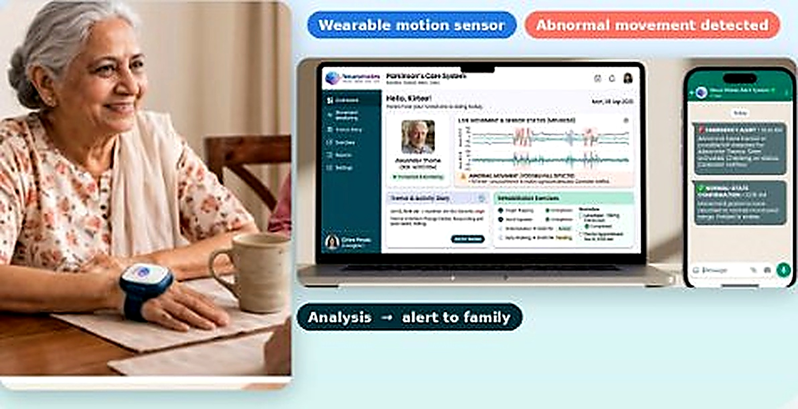
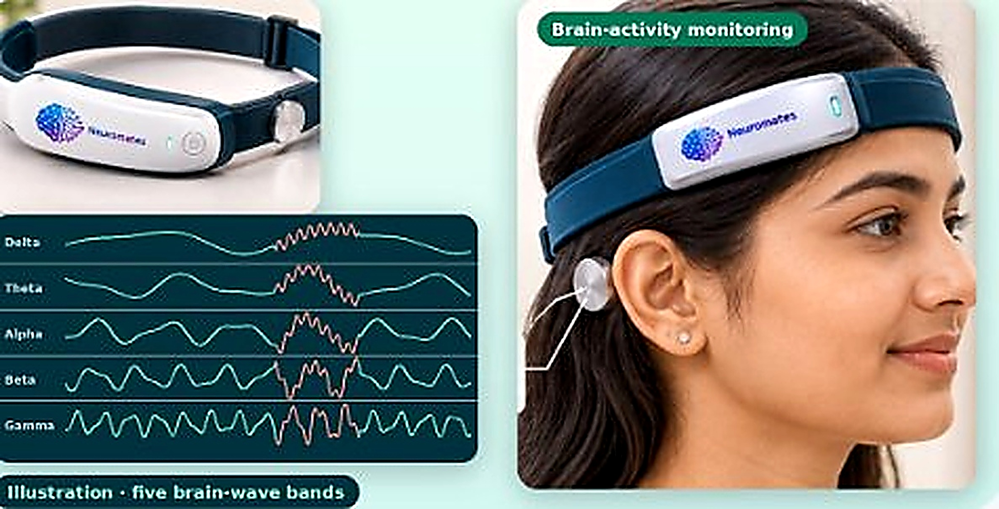
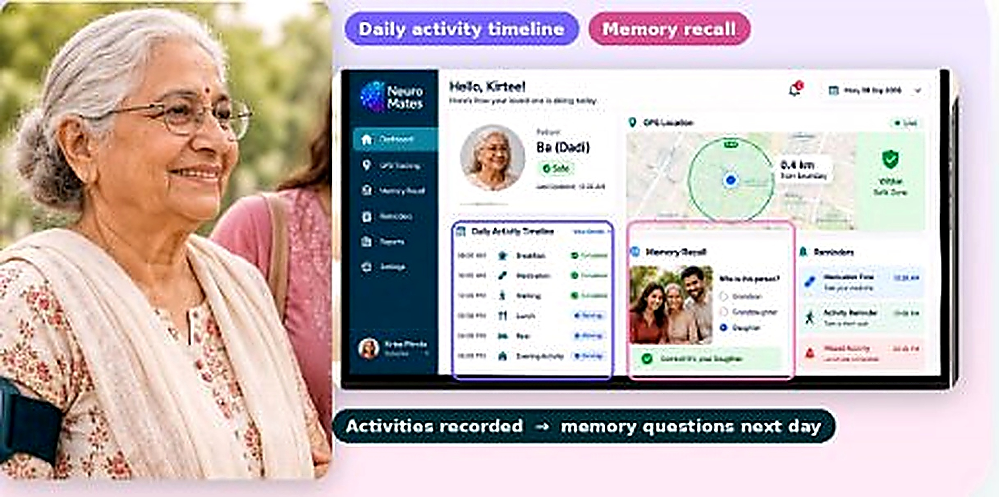
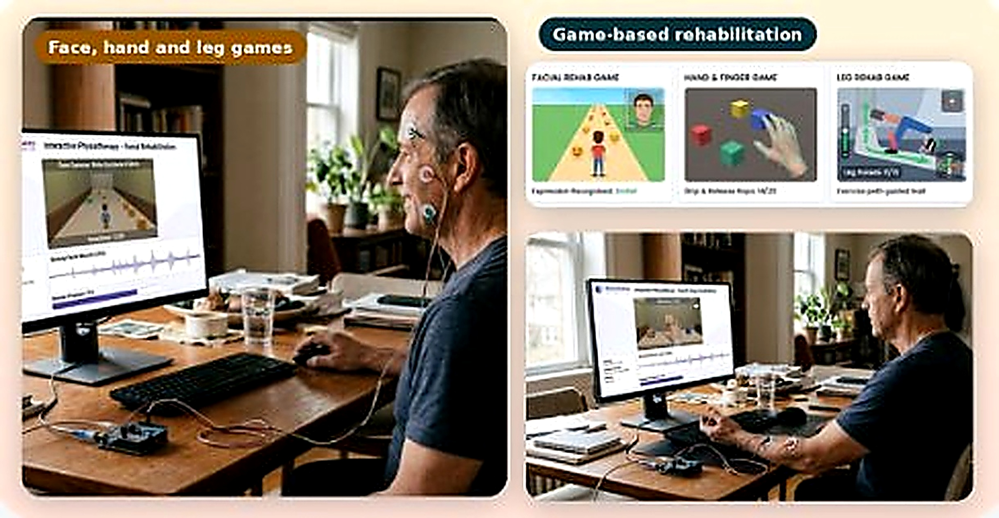

AI & MACHINE LEARNING
Intelligence designed around patient information.
Live Motion Analysis

MOVEMENT MONITORING
Movement
Movement information can be analysed for abnormal activity such as tremors or falls.
Continuous EEG Telemetry

BRAIN ACTIVITY MONITORING
Brain activity
Brain-activity information can be monitored for abnormal EEG signals that may indicate a seizure.
Routine & Memory Generator

MEMORY & ROUTINE
Daily activity
Daily activity information can support personalised memory-recall questions.
BioAmp EMG Active

INTERACTIVE REHABILITATION
Rehabilitation
Interactive rehabilitation can use patient movement and facial interaction.
PATIENT SAFETY & VALIDATION
Responsible intelligence
AI/ML performance can vary between patients. Patient-specific testing and improvement are important parts of
responsible development.